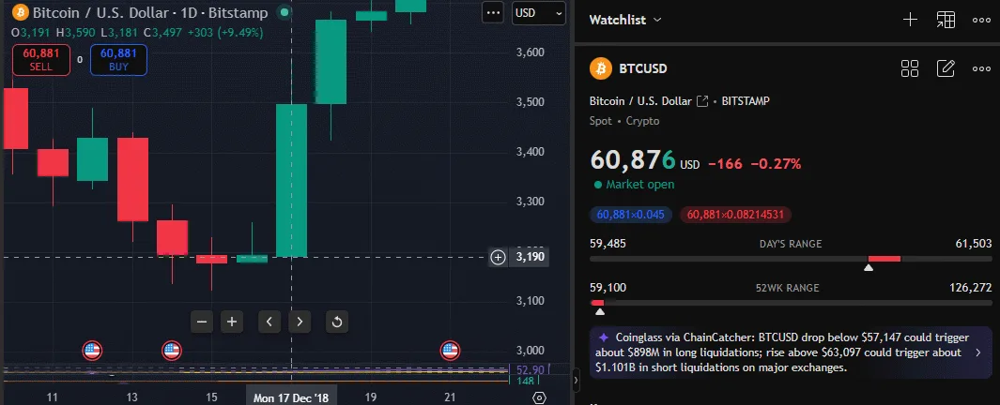

Lyhyesti
- Bitcoin on pudonnut lokakuun 2025 huipustaan yli puolet, ja media kirjoittaa taas romahduksesta.
- Pelko-otsikot ovat historiassa osuneet lähelle pohjia ja hehkutusotsikot lähelle huippuja.
- DCA eli säännöllinen ostaminen samalla summalla poistaa markkinoiden ajoittamisen ja tunteet päätöksistä.
- Neljän vuoden sykli ja 21 miljoonan kolikon katto selittävät, miksi pitkäjänteiset ovat tähän asti voittaneet.
Kun suomalainen media kirjoittaa bitcoinin hinnan laskusta – kuten Talouselämä teki 3.6.2026 – sinun pitäisi ostaa. Kun samat mediat alkavat hehkuttaa bitcoinin kaikkien aikojen huippuhintoja (ATH, all time high), sinun pitäisi myydä.
Et tarvitse tähän tietoa neljän vuoden syklistä etkä syvällistä perehtymistä bitcoiniin. Riittää, että ostat, kun media pelottelee, ja myyt, kun media hehkuttaa. Vielä yksinkertaisempi tapa on DCA (dollar cost averaging) eli säännöllinen ostaminen samalla summalla hinnasta välittämättä. Palaamme siihen kohta.
Tilanne nyt on tämä. Bitcoin saavutti kaikkien aikojen huippunsa lokakuussa 2025, noin 126 000 dollarissa. Tällä viikolla (5.6.2026) hinta on pyörinyt noin 62 000 dollarin tienoilla. Huipusta on siis pudottu yli 50 %, ja media kirjoittaa romahduksesta. Juuri tähän hetkeen tämä artikkeli viittaa.
Lasku kuulostaa pahalta. Historia kertoo kuitenkin eri tarinaa niille, jotka osaavat lukea sitä oikein.
Miksi media haluaa sinun pelkäävän
Ymmärrä yksi asia mediasta: se tienaa klikkauksilla, ja klikkauksia tulee parhaiten pelolla ja shokilla. Bitcoin ei ole poikkeus.
Kun bitcoin laskee, otsikot ovat dramaattisia ja täynnä sanoja kuten romahdus, kriisi ja kaatuminen. Kun bitcoin nousee, otsikot ovat täynnä sanoja kuten kupla, varoitus ja riski. Molemmat palvelevat samaa tarkoitusta: saada sinut klikkaamaan – ja pysymään poissa markkinoilta tai myymään väärällä hetkellä.
Todellisuudessa jokainen iso lasku bitcoinin historiassa on ollut ostotilaisuus niille, jotka ovat pitäneet päänsä kylmänä:
- 2018 bitcoin laski yli 80 % huipustaan, ja jokainen media julisti sen kuolleeksi.
- 2022 sama toistui, kun hinta romahti alle 17 000 dollarin. Taas kirjoitettiin hautajaisia.
Molemmilla kerroilla ostajat palkittiin ja myyjät hävisivät.
Muista myös, että Talouselämä ennusti 17.12.2018 bitcoinin loppua. Hinta oli tuolloin 3 191 dollaria. Se oli tavallista pelottelua, joka olisi ollut täydellinen ostopaikka kenelle tahansa, joka katsoi historiaa eikä kuunnellut mediaa.

Mitä DCA tarkoittaa käytännössä
DCA tarkoittaa, että ostat bitcoinia säännöllisesti kiinteällä summalla riippumatta hetken hinnasta. Esimerkiksi 50 euroa joka kuukausi samana päivänä, oli hinta mikä tahansa.
Näin poistat suurimman virheen, jonka ihmiset tekevät: markkinoiden ajoittamisen. Kukaan ei tiedä, milloin on tarkalleen pohja tai huippu. DCA-strategiassa sillä ei ole väliä. Ostat sekä halvalla että kalliilla, ja keskihinta tasoittuu ajan mittaan.
Motley Fool on laskenut esimerkin: 10 dollarin viikoittainen sijoitus bitcoiniin vuosina 2019–2024 kasvatti 2 610 dollarin kokonaissijoituksen noin 7 900 dollariin. Se on yli 200 %:n tuotto viidessä vuodessa. Analyysien mukaan myös yli kolmen vuoden DCA-jaksot ovat bitcoinissa päättyneet historiallisesti lähes poikkeuksetta voitolla. Tämä ei ole lupaus tulevasta, mutta se kertoo, miten strategia on tähän asti toiminut.
DCA:n psykologinen etu on yhtä tärkeä. Kun ostat automaattisesti joka kuukausi saman summan, sinun ei tarvitse miettiä, onko nyt hyvä hetki.
- Et panikoi hinnan laskiessa, koska tiedät saavasi tämän kuun ostoksen halvemmalla.
- Et menetä yöuniasi hinnan noustessa, koska olet ollut markkinoilla jo pitkään.

Neljän vuoden sykli ja mitä se tarkoittaa
Bitcoinissa on historiallisesti nähty neljän vuoden sykli, joka liittyy niin sanottuun halvingiin eli puolittumiseen. Noin neljän vuoden välein uusien bitcoinien syntytahti puolittuu. Uutta tarjontaa tulee vähemmän, ja tämä on vaikuttanut hintaan merkittävästi. Viimeisin halving tapahtui huhtikuussa 2024. Seuraava on odotettavissa keväällä 2028.
Sinun ei tarvitse ymmärtää koko mekaniikkaa, jotta DCA toimii. Riittää, että ymmärrät yhden asian: bitcoin on jokaisessa syklissä tähän asti tehnyt uuden huipun ja laskenut sen jälkeen rajusti ennen seuraavaa nousua.
Media, joka nyt kirjoittaa romahduksesta, on sama media, joka kirjoitti romahduksesta edellisellä kerralla ja sitä edellisellä. Silti jokainen niistä osoittautui pitkällä aikavälillä ostoikkunaksi.
Bitcoinin enimmäismäärä on 21 miljoonaa kolikkoa, ja raja on kirjattu protokollaan. Liikkeellä on nyt hieman yli 20 miljoonaa bitcoinia, joten uusia voi syntyä enää alle miljoona. Tämä niukkuus erottaa bitcoinin kaikista fiat-valuutoista, joita keskuspankki voi painaa rajattomasti lisää. Eikä niukkuus katoa mihinkään, vaikka hinta puolittuisi.
Mitä sinun pitää muistaa
Tämä ei ole sijoitusneuvo. Bitcoin on volatiili omaisuuserä, joten sijoita vain summa, jonka olet valmis menettämään.
Jos aiot joka tapauksessa sijoittaa bitcoiniin, DCA on yksinkertaisin ja psykologisesti helpoin tapa tehdä se. Se poistaa päivittäisen stressin siitä, onko hinta nyt liian korkea vai liian matala, ja antaa ajan tehdä työn puolestasi.
Kun seuraavan kerran näet Talouselämän tai Iltalehden otsikon "bitcoinin romahdus jatkuu", muista tämä: otsikko ei kerro, mitä sinun kannattaa tehdä. Se kertoo, mitä media haluaa sinun tekevän.
Mitä teet tänään
- Valitse kiinteä kuukausisumma, jonka pystyt sijoittamaan joka kuukausi.
- Aseta pörssiin automaattinen kuukausiosto samalle päivälle.
- Lopeta hinnan tuijottaminen ja pelko-otsikoiden lukeminen.
Artikkelin pääkuvassa on bitcoinin kuukausikynttiläkaavio TradingView-palvelusta. Voit seurata bitcoinin hintaa TradingView-palvelussa.